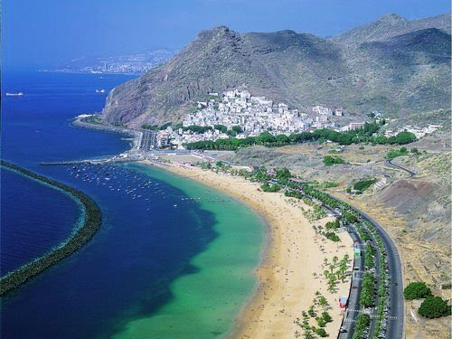

|
Coridele Ibiza Tenerife Madrid Barcelona Bilbao Valencia |
TenerifeTenerife este cea mai mare insulă din arhipelagul Canare din Oceanul Atlantic, aparținând Spaniei. Insula are o lungime de 80 km, o lățime de 50 km și o suprafață de 2 034,38 km². Populația este de 839.000 de locuitori, conform recensământului  din 2006 și de 908 555, reprezentând 43% din populația totală a Insulelor Canare în 2011. Este insula cea mai populată a arhipelagului și a Spaniei. Santa Cruz de Tenerife este capitala și reședința de guvern a insulei. Insula găzduiește Universitatea din La Laguna, fondată în anul 1792. Insula Tenerife este deservită de 2 aeroporturi, Tenerife North Airport si Tenerife South Airport, și este centrul turistic și economic al arhipelagului. Are 222 643 de locuitori. Al doilea oraș ca mărime după numărul de locuitori, având 152 222 de suflete, este San Cristóbal de La Laguna, singurul oraș din Canare declarat Patrimoniu al Umanității de către UNESCO. Insula deține și un alt obiectiv catalogat de UNESCO ca Patrimoniu al Umanității, Parcul Național Teide (înscris în 2007, al doilea cel mai vizitat parc al lumii), care se află pe vulcanul Teide (3 718 m înălțime), cel mai înalt munte al Spaniei. Insula este cunoscută la nivel internațional și pentru Carnavalul Santa Cruz de Tenerife considerat al doilea ca mărime din lume și declarat petrecere de interes turistic internațional. De asemenea, insula posedă o arhitectură variată, de la cea colonială, până al adevărate monumente de arhitectură contemporană, cum este edificiul Auditoriului din Tenerife. Tenerife este cunoscută și ca o destinație turistică majoră a Spaniei, primind anual peste cinci milioane de turiști. Tenerife e o insulă de origine vulcanică, a cărei formare începe să prindă contur pe fundul Oceanului Atlantic acum 20–50 milioane de ani. Insula s-a format în urma erupțiilor vulcanice submarine, datorate de mișcarea plăcii tectonice africane din Epoca Terțiară. Nașterea efectivă a insulei se întâmplă în miocen, acum 6 milioane de ani, după nenumărate erupții în urma cărora s-a depus o cantitate uriașă de lavă și fragmente de rocă care au ieșit la suprafață. Un al doilea ciclu vulcanic, mai violent a avut loc acum 3 milioane de ani. Erupțiile au continuat, cu întreruperi, pană acum 800.000 de ani, ducând la formarea masivilor muntoși ai insulei. Erupții mai importante au mai avut loc acum 200.000 de ani. |